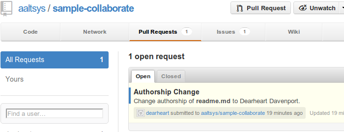

Once a developer has issued a pull request to a project, the project manager will see the request on the main project page, as shown below. The manager can then accept the request and merge it into the master project.
Developers use four common system tools to do most of their work:
Behind the scenes, the computer operating system must have a series of standard utilities which provide functionality for system commands. Some of these are:
Internet services extend the capabilities of the local computer or the local network to encompass the entire planet. A git repository installed on a developer’s workstation, and the same software hosted on the Internet, permits collaborative software development with teams all over the world.
Browse through the other pages of this site to learn about git, GitHub, MarkDown, and the usual developer workflow.
This website is written in Sphinxdoc, an extension of ReStructured Text, and GitHub hosts this site for free. Source text of each page may be viewed by clicking the View Source in the side menu of any page. The source repository for the site is on GitHub as well. [1]
Learning ReST markup and writing a documentation website hosted for free at GitHub is not difficult. A guide to installing Linux and SphinxDoc tools for writing documentation is available at publish.aaltsys.com. The source repository for that site is also hosted at GitHub. [2]
Footnotes
| [1] | Collaboration project source: https://github.com/aaltsys/doc-collaborate. |
| [2] | Publication project source: https://github.com/aaltsys/doc-publish. |